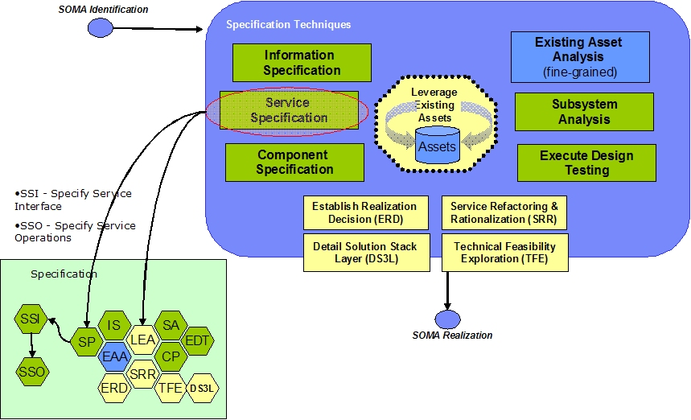
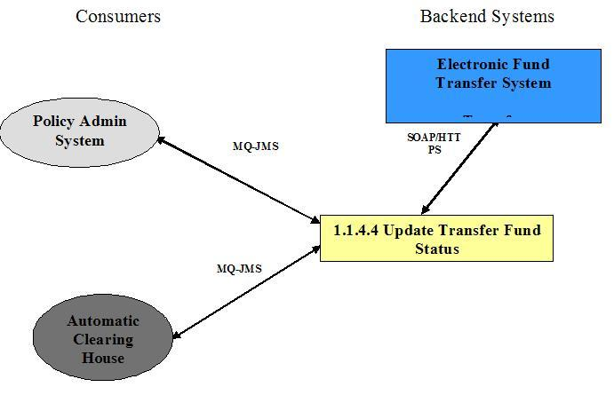

| Artifact: Service Specification (ART 0585) |
 |
|
| The purpose of this artifact is to define the responsibilities and key characteristics for individual services from which detailed design and implementation activities can be performed. |
| Main Description | This artifact contains detailed information captured about services during SOMA Specification and Realization phases. Along with specifying the details of the exposed services, certain types of requirements and constraints are also summarized, including specific types of non-functional requirements and realization decisions specific to a service. There should be one instance of this for each service in the model. 
Table 1 shows the elements of the Service Specification that are captured in this artifact.
|
||||||||||||||||||||||
|---|---|---|---|---|---|---|---|---|---|---|---|---|---|---|---|---|---|---|---|---|---|---|---|
| Brief Outline | The Service Specification details the various elements of the service design that are critical for the efficient and successful implementation of the services. This artifact captures the following:
|
||||||||||||||||||||||
| Notation | The Service Specification information will be captured using the various depictions shown below:
Service Context Diagram  Service Context Diagram
Service Messages Enterprise message formats must be reconciled with the input/output messages of individual services/service operations, so they are related and assigned to allow appropriate services to use and update them as needed. Services may need to extract information from or expect output from the Common Enterprise Message format.
Service Non-Functional Requirements Nonfunctional requirements that can be summarized in the Service Specification:
Service Allocation to Components
Realization Decisions
Note that more than one alternative might be adopted for certain decision points. In those cases the decision point should be listed once for each adopted alternative, along with a list of services that the alternative will be applied to.
|
||||||||||||||||||||||
| Selected Representation | This information in this artifact can be captured using SOMA-ME modeling tool. The SOMA-ME also aids in the generation of the artifact from the model created using the tool. |
| Templates | |
|---|---|
| Examples |
| Only those services that pass the Service Litmus test and are planned to be exposed are specified further. |
| Impact of not having | Without this artifact it would be difficult to specify the details of the services that have to be realized and implemented and to document the service realization decisions. |
|---|---|
| Reasons for not needing | This artifact is not needed if either the services are not externalized, or if the externalized services are very simple and the non-functional requirements for them are not stringent. |
| Representation Options | The Service Specification MS Word template can be used directly when SOMA-ME is not available for the project. |
| © Copyright IBM Corp. 1987, 2012 All Rights Reserved Property of IBM These materials are intended only for use as part of an IBM engagement |